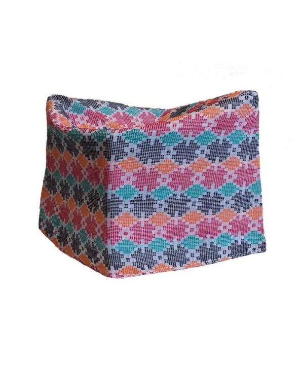
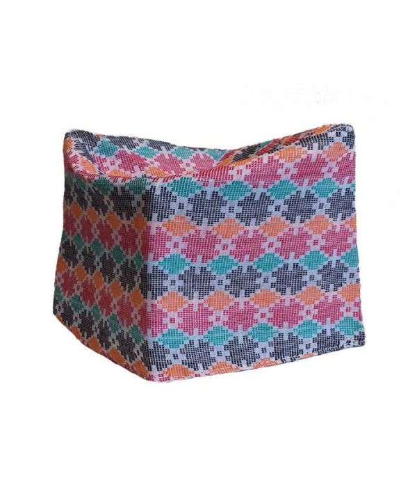

Swoyambhunath
Find peace and prayers on the little hillock of Swaymbhunath northwest of Kathmandu Valley.
Find peace and prayers on the little hillock of Swaymbhunath in the northwest of Kathmandu Valley. Visitors for whom the name was a tongue twister have called it "Monkey Temple" from the 1970s. Swayambhu, overlooks most parts of the valley giving visitors a panoramic view of the city. The stupa has stood as a hallmark of faith and harmony for centuries with Hindu temples and deities incorporated in this Buddhist site. The glory of Kathmandu Valley is said to have started from this point. Resting on a hillock 3 km west of Kathmandu, Swayambhu is one of the holiest Buddhist stupas in Nepal. It is said to have evolved spontaneously when the valley was created out of a primordial lake more than 2,000 years ago. This stupa is the oldest of its kind in Nepal and has numerous shrines and monasteries on its premises. Swayambhu literally means "self-existent one". Believed to date back to 460 A.D., it was built by King Manadeva and by the 13th century, it had become an important center of Buddhism. Legend has it that Swayambhu was born out of a lotus flower that bloomed in the middle of a lake that once spread across the Kathmandu Valley once was. The largest image of the Sakyamuni Buddha in Nepal sits on a high pedestal on the western boundary of Swayambhu beside the Ring Road. Behind the hilltop is a temple dedicated to Manjusri or Saraswati - the Goddess of learning. Chaityas, statues and shrines of Buddhist and Hindu deities fill the stupa complex. The base of the hill is almost entirely surrounded by prayer wheels and deities. Devotees can be seen circumambulating the stupa at all times. Exceedingly steep stone steps that lead up to the shrine is quite a challenge. However, there is also a motor road going up almost to the top from where it is a short walk. A large number of Buddhists and Hindus alike visit Swayambhu throughout the day. This shrine is perhaps the best place to observe religious harmony in Nepal. The largest crowds of people are seen here on Buddha's birthday which usually falls in May each year.Some important monuments to see in this area
The huge gold plated Vajra ‘thunderbolt’ set in the east side of the stupa.
Buddha statue on the west side of Swayambhu.
The Sleeping Buddha.
The Dewa Dharma Monastery, noted for a bronze icon of Buddha and traditional Tibetan paintings.
The temple dedicated to Harati, the goddess of all children. It is said that she was an ogress before Lord Buddha converted her to be the caretaker of all children.